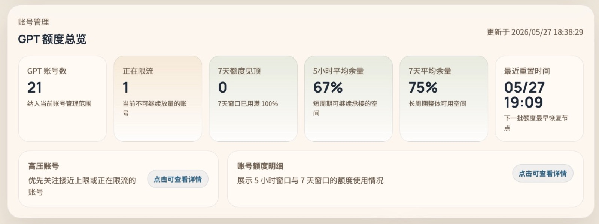
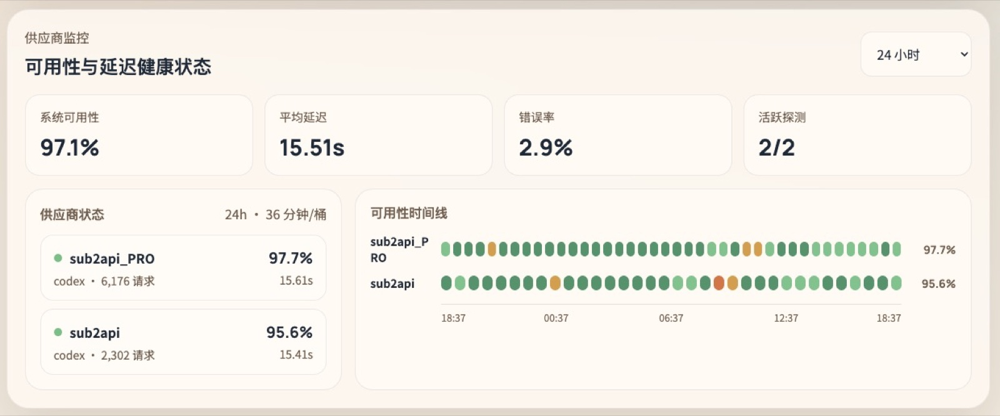
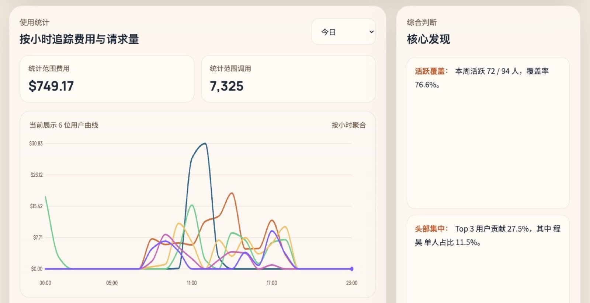

已上线内部平台
AI 应用统计管理平台
AI 应用统计管理平台是软件部已上线的内部 AI 应用运营看板，用于集中查看各 AI 应用的访问量、活跃用户、部门覆盖、使用趋势和运营数据。平台帮助团队判断应用是否被真正使用、哪些部门需要支持、哪些能力值得继续投入。
展示各 AI 应用访问量、活跃用户和使用趋势，帮助负责人判断应用热度和变化。
展示不同部门对 AI 应用的使用情况，识别需要培训支持或重点推广的部门。
沉淀周期统计、应用排名和趋势变化，支撑月度复盘、推广计划和资源投入判断。
适用对象
平台面向公司内部使用，不要求普通同事自行部署。不同角色可以根据关注点查看对应统计数据。
| 使用对象 | 可以查看什么 | 使用价值 |
|---|---|---|
| AI 应用负责人 | 应用访问量、活跃用户、趋势变化 | 判断应用上线效果 |
| 运营管理同事 | 部门覆盖、应用排名、周期报表 | 支撑运营复盘 |
| 业务部门接口人 | 本部门使用情况、重点应用数据 | 了解部门使用进展 |
| 软件部管理同事 | 整体应用热度、推广效果、资源投入 | 辅助管理决策 |
功能展示
查看已接入 AI 应用、上线状态、负责人和整体使用概况。
查看访问量、活跃用户和周期变化，识别上升、下降和异常波动。
查看不同部门的使用覆盖情况，支撑培训、推广和重点部门跟进。
汇总阶段性使用情况，支撑月度复盘、价值评估和推广计划。
平台截图
主要界面预览



访问与使用
访问地址
公司内网访问：AI 应用统计管理平台。
在公司内网环境打开平台地址，进入 AI 应用统计管理平台。
选择统计周期、应用范围或部门范围，确认当前查看口径。
先看访问量、活跃用户、部门覆盖和趋势变化。
对使用上升、下降或异常波动的应用进行分析，形成推广建议或问题跟进。
常见问题
| 问题 | 说明 |
|---|---|
| 无法访问平台 | 请确认是否处于公司内网环境，访问地址是否正确。 |
| 不知道先看哪个指标 | 建议先看访问量、活跃用户、部门覆盖和趋势变化。 |
| 数据和预期不一致 | 先确认统计周期、应用范围、用户归属和同步时间。 |
| 某个应用没有数据 | 确认该应用是否已接入统计口径，或联系软件部 AI 对接人确认。 |
建设说明
建设背景
随着软件部 AI 应用逐步上线，需要统一了解各应用的真实使用情况、部门覆盖情况和运营趋势。AI 应用统计管理平台用于沉淀 AI 应用使用数据，为后续应用推广、资源投入、效果复盘和管理决策提供依据。
| 建设内容 | 说明 |
|---|---|
| 应用使用统计 | 汇总各 AI 应用的访问量、活跃用户和使用趋势。 |
| 部门覆盖分析 | 查看不同部门使用情况，辅助推广和培训安排。 |
| 运营复盘支撑 | 沉淀周期数据和报表，为持续优化提供依据。 |